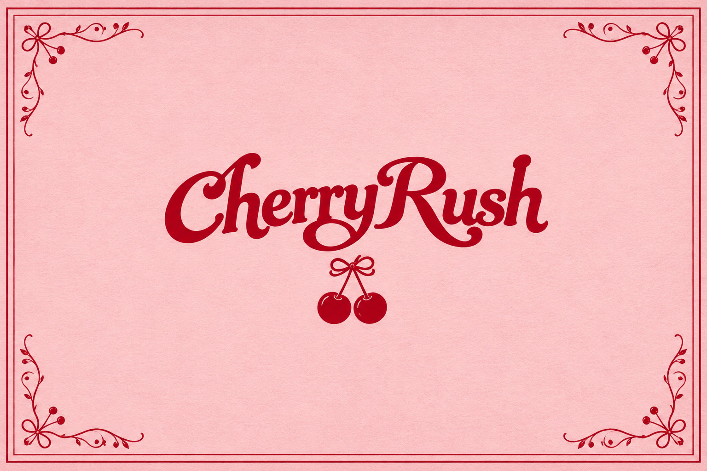
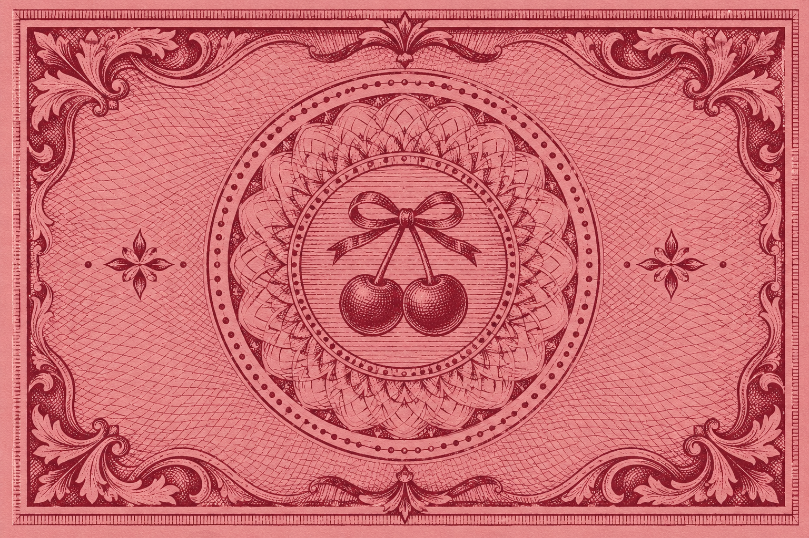
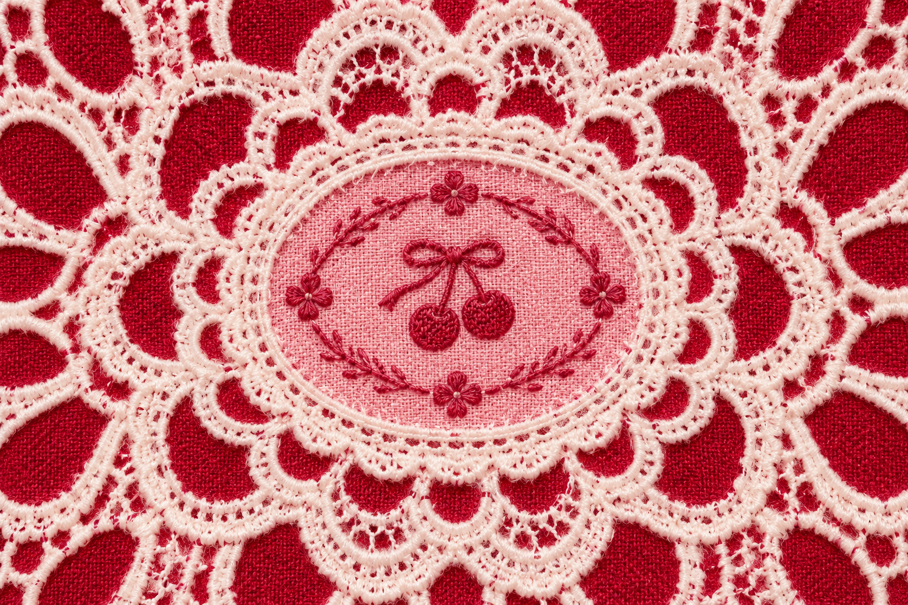
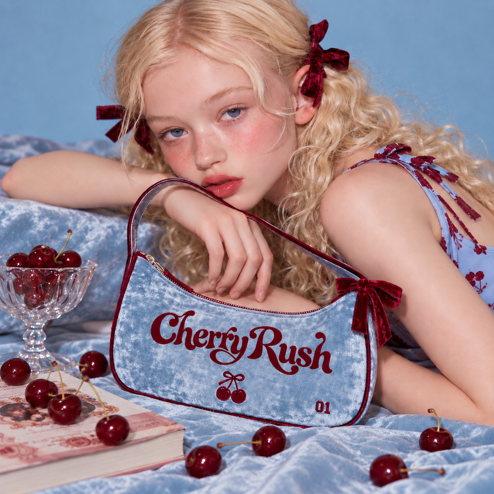
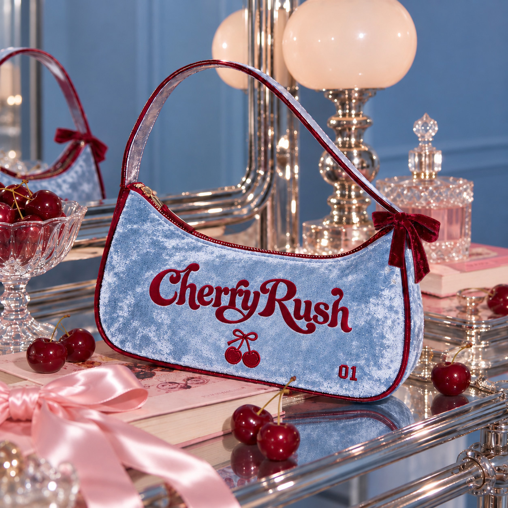
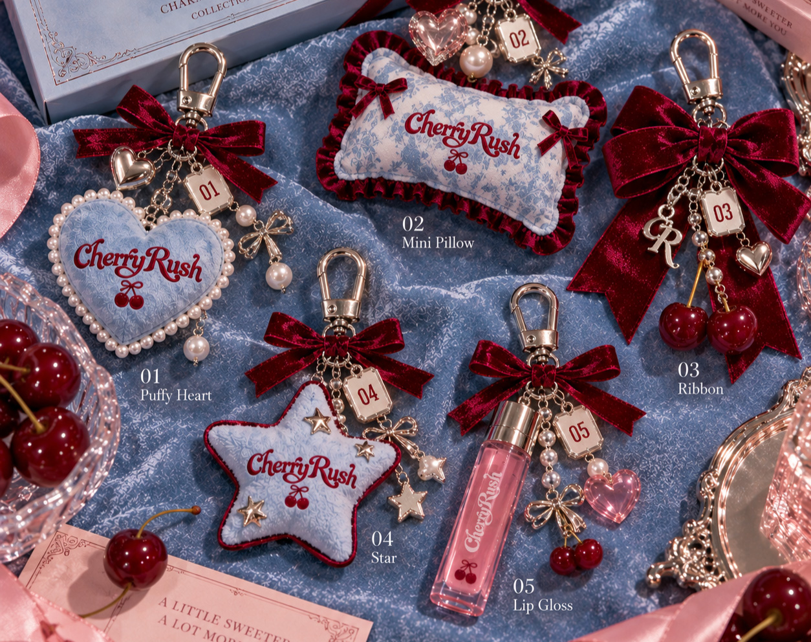
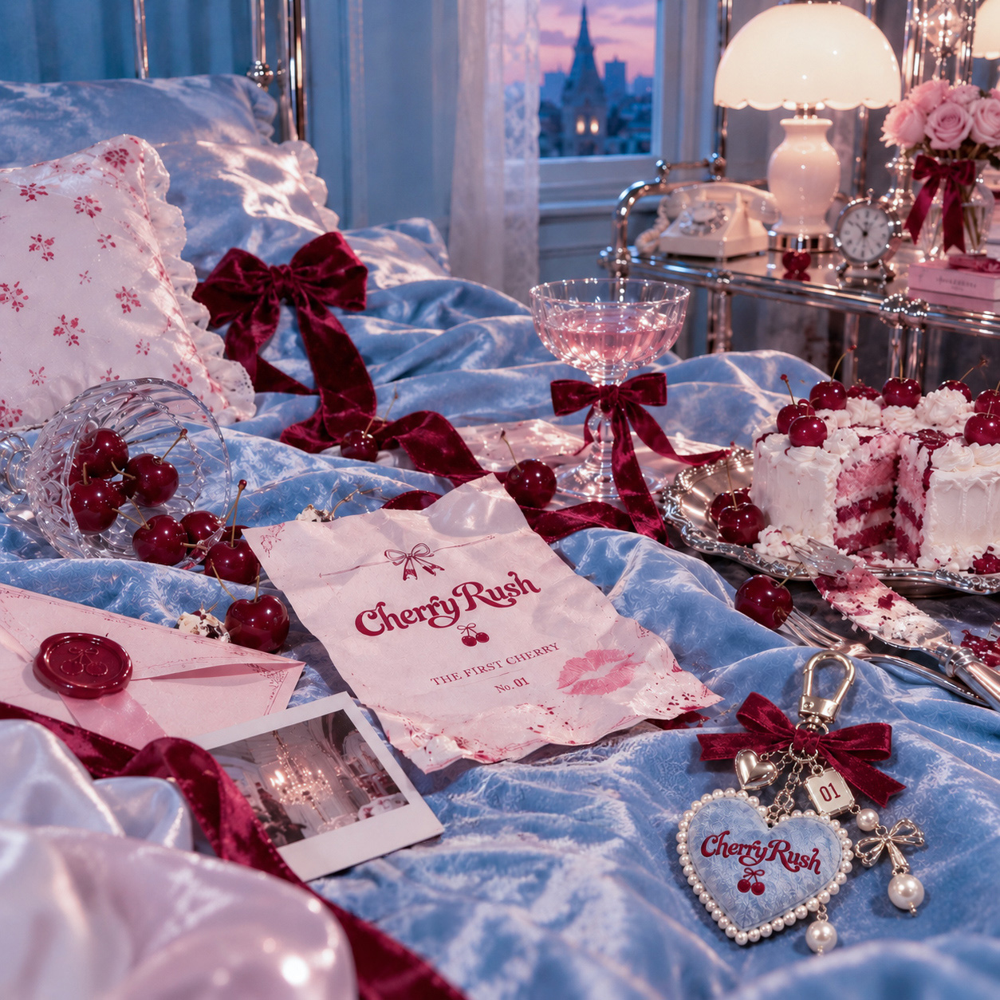
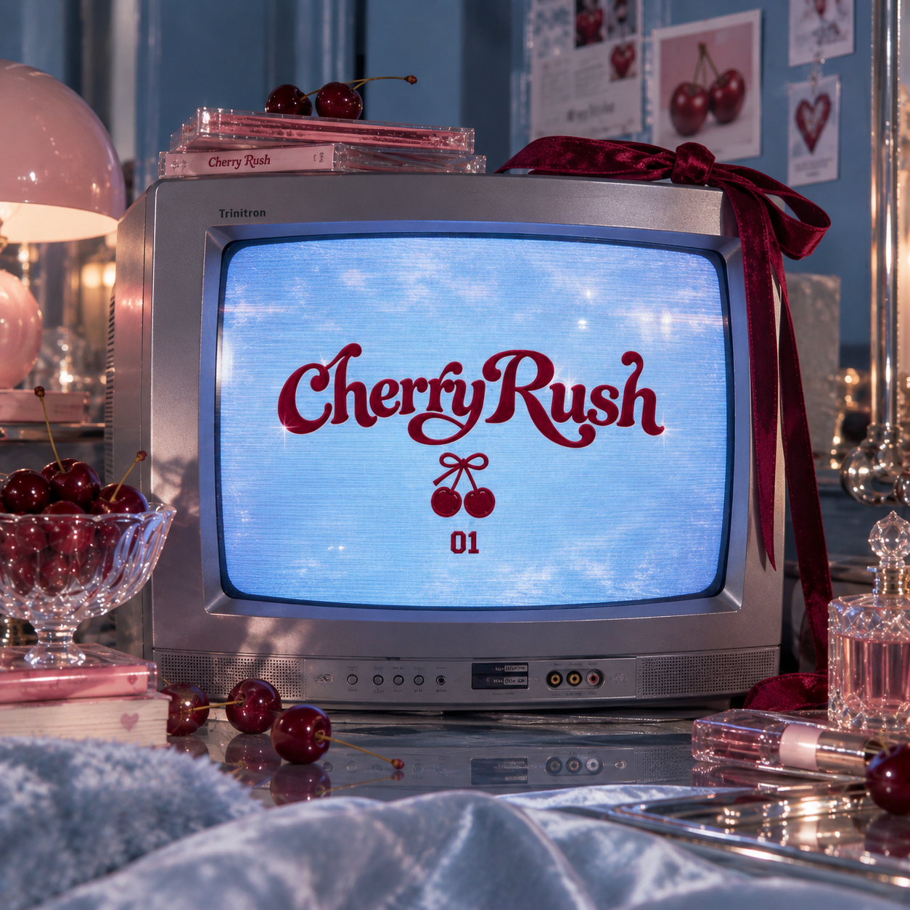

Object 01
Ribbon Bag
파우더 블루의 곡선형 백에 체리 레드 로고와 벨벳 리본을 더했습니다. 빈티지한 장식성과 현대적인 실루엣을 결합한 브랜드의 시그니처 오브제입니다.
Chapter 01Visual identity
체리와 리본을 결합한 심벌에 빈티지 그래픽의 장식성을 더했습니다. 로고부터 판화와 자수 표현까지, 하나의 모티프를 다양한 시각 언어로 확장했습니다.



Chapter 02Campaign portrait
체리 레드와 파우더 블루의 대비, 리본을 활용한 스타일링으로 브랜드 특유의 낭만적인 분위기를 연출했습니다. 장식적인 패션을 통해 자기표현의 즐거움을 시각화합니다.

Chapter 03The object

Object 01
파우더 블루의 곡선형 백에 체리 레드 로고와 벨벳 리본을 더했습니다. 빈티지한 장식성과 현대적인 실루엣을 결합한 브랜드의 시그니처 오브제입니다.

Object 02
하트, 미니 필로, 리본, 별, 립글로스 등 서로 다른 형태의 참을 공통된 색채와 장식 언어로 연결했습니다. 작은 액세서리를 통한 자기표현의 가능성을 보여줍니다.
Chapter 04The scene
푸른 패브릭과 빈티지 가구, 체리와 리본 오브제를 활용해 브랜드의 낭만적인 세계관을 공간으로 확장했습니다.

